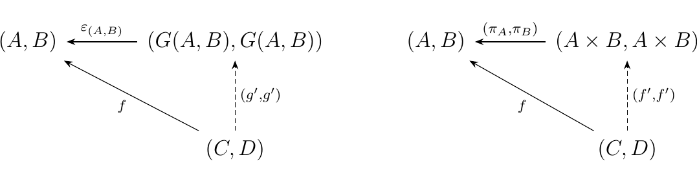
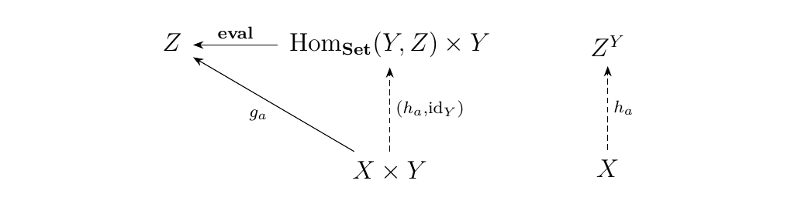
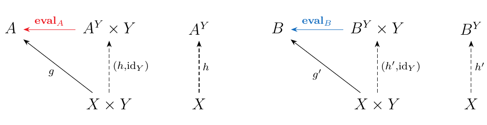
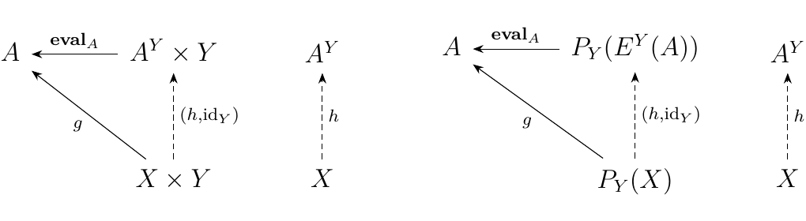

4.5. Exponential Objects and Cartesian Closed Categories.
Before we introduce the notion of cartesian closed category, we begin with a preliminary proposition.
Suppose \(\cc\) is a category, and consider the functors
where \(**1**\) is the one object category. \begin{description} \item[\(\bm{(i)}\)] If \(U\) has a left adjoint, then \(\cc\) has an initial object.
\item[\(\bm{(ii)}\)] If \(\Delta\) has a left adjoint, then \(\cc\) has finite coproducts.
\item[\(\bm{(iii)}\)] If \(U\) has a right adjoint, then \(\cc\) has a terminal object.
\item[\(\bm{(iv)}\)] If \(\Delta\) has a right adjoint, then
\(\cc\) has finite products.
\end{description}
The proof is a straightforward, although tedious, so we sketch it
out as follows.
\textcolor{RedViolet}{**Adjoints of \(\bm{U**.\)}} First, let \(F: **1** \to \cc\) be a left adjoint of \(U\). Suppose \(F(1) = I\) in \(\cc\). Then for any \(C \in \cc\), we have the bijection \(\hom_{\cc}(F(1), C) \cong \hom_{**1**}(1, U(C))\) which implies that
In other words, for each object \(C\), there is exactly one and only one morphism \(i_C: I \to C\), which makes \(I\) an initial object.
On the other hand, suppose \(G: {1} \to \cc\) is a right adjoint of \(U\). Then if \(G(1) = T\), we have the bijection \(\hom_{**1**}(U(C), 1) \cong \hom_{\cc}(C, G(1))\) which implies that
so that for each object \(C\) there exists a unique morphism \(t_C: C \to T\), which makes \(T\) a terminal object. Hence left and right adjoints guarantee the existence of initial and terminal objects.\ \ \textcolor{RedViolet}{**Adjoints of \(\bm{\Delta**\).}} Let \(F: \cc \times \cc \to \cc\) be a left adjoint of \(\Delta\), so that we have the relation
Then for each object \((A, B) \in \cc \times \cc\), we have the morphism \(\eta_{(A,B)}: (A, B) \to \Delta(F(A,B))\), which we can rewrite as \(\eta_{(A,B)}: (A, B) \to (F(A,B), F(A,B))\). We can put this into a universal diagram \ where the diagram on the right is the coproduct diagram of \(A \times B\). Since both of the pairs \(\Big((F(A,B), F(A,B)), \eta_{(A,B)}\Big)\) and \(\Big((A\times B, A \times B), (\pi_A, \pi_B)\Big)\) are universal from \((A, B)\) to \(\Delta\), they must be isomorphic. As two universal objects are isomorphic, we therefore have,
so that a left adjoint gives rise to products.
Let \(G: \cc \times \cc \to \cc\) be a right adjoint of \(\Delta\), so that we have \ The adjunction gives rise to a universal morphism \(\epsilon_{(A,B)}: \Delta(G(A,B)) \to (A,B)\), which we can rewrite as \(\epsilon_{(A,B)}: (G(A,B), G(A,B)) \to (A,B)\). We then have the diagram \  where the diagram on the right is the product diagram of \(A \times B\). Thus we see that\ \(\Big((G(A,B), G(A, B)), \epsilon_{(A,B)}\Big)\) and \(\Big((A\times B, A \times B), (\pi_A, \pi_B)\Big)\) are both universal from \(\Delta\) to \((A, B)\). As universal objects from the same construction are isomorphic, we have that
so that this adjunction gives rise to coproducts.
\textcolor{MidnightBlue}{Thus if we have left and right adjoints of the functors \(U\) and \(\Delta\), we get initial and terminal objects as well as finite products and coproducts. Note, however, that finite products require (and give rise to) initial objects, and similarly that finite coproducts require (and give rise to) terminal objects.}
Next, we make the following definition.
Let \(\cc\) be a category with finite products. Suppose \(Y, Z\) are objects in \(\cc\). We say \(Z^Y\) is an exponent object in \(\cc\) if there exists a morphism \(**eval**: (Z^Y \times Y) \to Z\) which is universal from \(-\times Y: \cc \to \cc\) to the object \(Z\).
Visually, this translates into requiring that the following diagram commutes. \ \textcolor{Purple}{Hence, every morphism, with the domain being any product with \(\bm{Y}\), and codomain being \(\bm{Z}\), uniquely factors through \(\bm{Z^Y \times Y}\).}
Here, we'll stop and look at a pretty cool real world example.
Consider the category Set. Then we know that, for any two given objects \(Y\) and \(Z\), we can form a set of functions between the objects:
Thus, the collection of morphisms from sets \(Y\) to \(Z\) is itself a set, and hence a member of Set. Now let \(A\) be any object in \(**Set**\), and let
Define \(**eval**: \hom_{**Set**}(Y, Z)\times Y \to Z\) as, who would've guessed, the evaluation:
Now for each \(a \in A\), we can define a function \(g_a: X \times Y \to Z\) where for each \(f: A \times Y \to Z\)
so this is sort of a "double" evaluation function. Then for every such \(g_a\), there exists a unique \(h_a: X \to \hom_{**Set**}(Y, Z)\) where for each \(f: A \times Y \to Z\)
Thus we get the following commutative diagram: \  What is this? What's really going on and why do we care?\ \textcolor{MidnightBlue}{This construction relates to a concept in computer science called currying. Applied category theory in computer science generally works in Set, so that's why this idea transfers over. \ \ The idea is: given a multivariable function, do we evaluate all arguments at once, or evaluate just one argument, thereby sending a function to another function? Both methods can offer advantages. But universality tells us that, in the end, they're the same thing.}
We can think of \(X \times Y\) as being elements \((f(a, y), y')\) where \(f: A \times Y \to Z\). Then \(h\) evaluates \(f(a',y)\) for some \(a'\), thus sending the function \(f: A \times Y \to Z\) to the function \(f:Y \to Z\). That is,
Finally, \(**eval**\) evaluates \(f(a', y)\) at \(y'\), returning an object in \(Z\).
Alternatively, we can start with the object \((f(a, y), y')\), and simply act on \(g\), which evaluates it at both \(a'\) and \(y'\), returning the same object \(f(a', y')\). Thus in the realm of computer science, we may think of the morphisms \((h, \id_y)\), \(g\) and eval as commands, as this is how currying is often done.
The universality of this constructions states that both methods are the same; that is,
Since we started with arbitrary objects in Set, the consequence for computer science is that we can always curry these functions. Typically what is curried are types, such as Bool or Int.
In an arbitrary category of finite products, the exponential object is just a generalization of currying. But in Set, we see that an exponential object exists for any two pairs of sets. Thus, can we turn this exponential assignment into a functor? Yes,we can.
Let \(\cc\) have finite products and exponential objects for every pair of objects. Then for each \(Y\) in \(\cc\) we can create an exponential functor \(E^Y: \cc \to \cc\) as follows. \begin{description} \item[Objects.] For each \(Z \in \cc\), we define \(E^Y(Z) = Z^Y\).
\item[Morphisms.] Let \(f: A \to B\) be in \(\cc\). Then we note that we have the following diagrams. \  Now observe that we can form the morphism \(f \circ \textcolor{Red}{**eval**_A} : A^Y \times Y \to B\). Hence by universality of \(B^Y\), there exists a unique morphism \(h': A^Y \to B^Y\). Diagrammatically, we take the above diagram on the right, and replace \(X\) with \(A^Y\) and \(g\) with \(f \circ **eval**_A\). \ Since \(h\) exists if \(f: A \to B\) exists, we therefore define
where \(h'\) is the unique morphism such that
\end{description}
Note that there's one more cool connection here. If we have a
category
with finite products, and one in which exponential objects exist,
then we have a morphism \(**eval**_A: A^Y \times Y
\to A\) which is universal from the functor \(-\times Y: \cc \to
\cc\)
to \(A\).
Therefore, this is a counit! There's an adjunction hiding
here.
Let \(\cc\) be a category with finite products and exponential objects. Let \(Y\) be an object, and define the functors
Then \(E^Y\) is right adjoint to \(P_Y\) for every \(Y \in \cc\). Therefore,
which is natural for all objects \(X, Y, Z \in \cc\).
For each object \(A \in \cc\), the exponential object gives rise to a universal morphism \(**eval**_A: A^Y \times Y \to A\). So on one hand, we get the diagram on the left \  but on the other hand, the diagram on the right is exactly equivalent. Hence we see that \(**eval**\) is actually a counit \(\epsilon_A: P_Y(E^Y(A)) \to A\). Since such a counit exists for each \(A\), this gives rise to an adjunction, so that \(E^Y\) is right adjoint to \(P_Y\) for every object \(Y\) in \(\cc\).
Finally, we have everything we need to move onto to the main point of this section.
Let \(\cc\) be a category. We say \(\cc\) is a \textbf{cartesian closed category} if the functors
have right adjoints. In other words, \(\cc\) is cartesian closed if
-
[1.] There exists a terminal object \(T\)
-
[2.] \(\cc\) has finite products
-
[3.] An exponential object \(A^Y\) for every \(A \in \cc\) for all \(Y\).
Thus the work we just did was used in showing that our three-bullet point list is another definition of a cartesian closed category. Often, only one definition or the other is offered, and it's not trivial how they're equivalent, so it can be confusing. Thus our work shows that either definition is equivalent.
Some examples include Set, which we already dealt with. Set has a terminal object (empty set), has finite products, and has an exponential object. More interesting is Cat, which is cartesian closed. In this case, 1 is the terminal object, Cat is closed under finite products, and the exponential object exists. In this case, \(\cc^{\bb}\) is simply the functor category!
\textcolor{MidnightBlue}{At first, it seemed silly to define \(\cc^\bb\) as the category of functors from \(\bb\) to \(\cc\), since it seemed that it ought to be denoted \(\bb^\cc\). However, we see that this was really just because of the concept of exponentials, which isn't known when being introduced functor categories.}
\chapterimage{chapter5_pic/chapt5head.pdf}